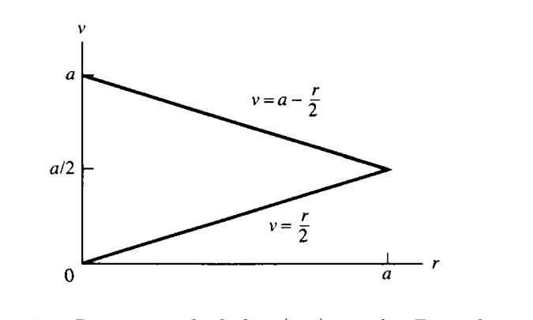
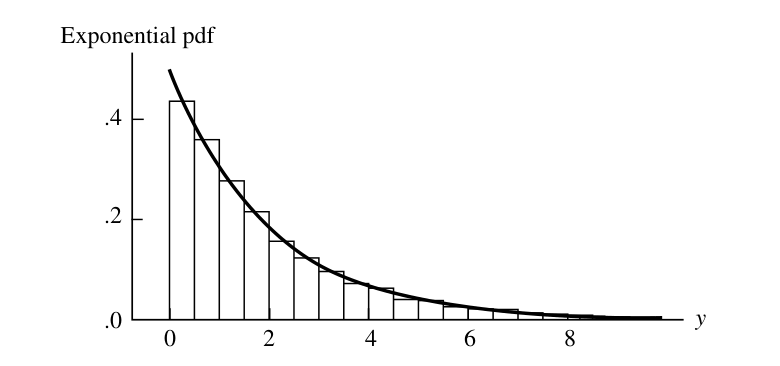
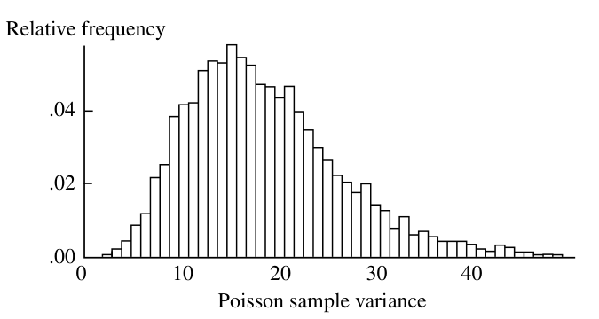
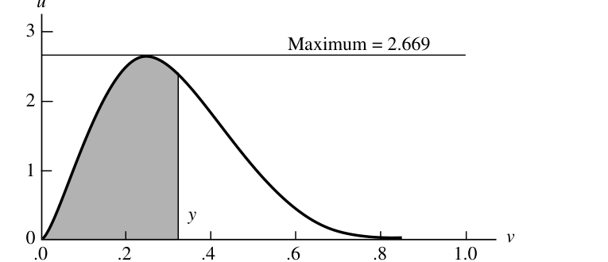

5 확률표본의 성질
“I’m afraid that I rather give myself away when I explain,” said he. “Results without causes are much more impressive.”
— Sherlock Holmes, The Stock-Broker’s Clerk
- 이 장의 핵심은 확률표본(random sample)이다.
- 통계학에서 실제 자료는 보통 하나의 숫자가 아니라 여러 관측값으로 이루어진다.
- 이 장에서는 여러 관측값이 어떤 확률구조를 가질 때 이를 확률표본이라고 부르는지, 그리고 확률표본으로부터 계산한 통계량들이 어떤 분포와 성질을 갖는지 배운다.
- 특히 다음 주제들이 중요하다.
- 확률표본과 iid 가정
- 표본평균과 표본분산
- 정규표본에서의 표본평균, 표본분산, t 분포, F 분포
- 순서통계량
- 대수의 법칙, 중심극한정리, Slutsky 정리, Delta method
- 난수 생성과 시뮬레이션
5.1 확률표본의 기본 개념
5.1.1 확률표본의 정의
- 많은 실험에서 자료는 관심 변수에 대한 여러 번의 관측값으로 이루어진다.
- 예를 들어 회로판 수명 실험에서 여러 회로판을 테스트하면 각 회로판의 고장 시간이 하나의 관측값이다.
- 이런 상황을 수학적으로 표현하는 대표적 모형이 확률표본(random sampling)이다.
5.1.1.1 정의
- 확률변수 \(X_1,\ldots,X_n\)이 모집단 \(f(x)\)에서 추출한 크기 \(n\)의 확률표본이라는 것은 다음 두 조건을 만족한다는 뜻이다.
- \(X_1,\ldots,X_n\)이 서로 독립이다.
- 각 \(X_i\)의 주변 pdf 또는 pmf가 모두 같은 함수 \(f(x)\)이다.
- 같은 뜻으로 \(X_1,\ldots,X_n\)은 independent and identically distributed, 즉 iid라고 한다.
5.1.2 결합 pdf 또는 pmf
- 확률표본에서는 모든 관측값이 독립이고 같은 분포를 가지므로 결합 pdf 또는 pmf가 곱으로 표현된다.
\[ f(x_1,\ldots,x_n) = f(x_1)f(x_2)\cdots f(x_n) = \prod_{i=1}^{n} f(x_i). \tag{5.1.1} \]
- 모집단이 모수 \(\theta\)를 가진 분포족 \(f(x\mid\theta)\)에 속하면 표본의 결합 pdf 또는 pmf는
\[ f(x_1,\ldots,x_n\mid\theta) = \prod_{i=1}^{n}f(x_i\mid\theta) \tag{5.1.2} \]
이다.
- 여기서 모든 항에 동일한 모수값 \(\theta\)가 들어간다.
- 통계추론에서는 보통 분포족은 알고 있지만 \(\theta\)는 모른다고 가정한다.
- 표본의 결합분포는 \(\theta\)가 어떤 값일 때 표본이 어떻게 행동하는지 분석하는 출발점이다.
5.1.3 예제: 지수분포 표본의 결합 pdf
- \(X_1,\ldots,X_n\)이 exponential\((\beta)\) 모집단에서 나온 확률표본이라고 하자.
- 각 \(X_i\)는 회로판의 고장 시간처럼 해석할 수 있다.
- 단일 관측값의 pdf는
\[ f(x_i\mid\beta)=\frac1\beta e^{-x_i/\beta},\qquad x_i>0. \]
- 따라서 표본의 결합 pdf는
\[ \begin{aligned} f(x_1,\ldots,x_n\mid\beta) &= \prod_{i=1}^{n}\frac1\beta e^{-x_i/\beta}\\ &= \frac{1}{\beta^n}e^{-(x_1+\cdots+x_n)/\beta}. \end{aligned} \]
- 모든 회로판이 2년 이상 지속될 확률은
\[ P(X_1>2,\ldots,X_n>2). \]
- 독립성과 동일분포성을 이용하면
\[ \begin{aligned} P(X_1>2,\ldots,X_n>2) &= P(X_1>2)\cdots P(X_n>2)\\ &=[P(X_1>2)]^n\\ &=(e^{-2/\beta})^n\\ &=e^{-2n/\beta}. \end{aligned} \]
- 이 예제는 확률표본의 핵심 계산 원리가 “독립이므로 곱하고, 동일분포이므로 같은 항이 반복된다”는 데 있음을 보여준다.
5.1.4 무한 모집단과 유한 모집단
- 정의 5.1.1의 확률표본은 흔히 무한 모집단에서의 표본추출로 이해할 수 있다.
- 첫 번째 관측값 \(X_1=x_1\)을 얻어도 모집단은 변하지 않고, 두 번째 관측값 \(X_2\)도 여전히 같은 분포에서 나온다.
- 유한 모집단에서는 표본추출 방식에 따라 iid가 성립할 수도 있고 성립하지 않을 수도 있다.
5.1.4.1 복원추출
- 유한 모집단 \(\{x_1,\ldots,x_N\}\)에서 하나를 뽑아 기록한 뒤 다시 모집단에 넣는다.
- 이 과정을 \(n\)번 반복한다.
- 각 \(X_i\)는 같은 이산분포를 가진다.
\[ P(X_i=x_j)=\frac1N, \qquad j=1,\ldots,N. \]
- 매번 모집단이 원래 상태로 돌아가므로 \(X_1,\ldots,X_n\)은 독립이다.
- 따라서 복원추출에서는 정의 5.1.1의 확률표본 조건이 만족된다.
5.1.4.2 비복원추출
- 한 번 뽑힌 값은 다시 뽑을 수 없다.
- 이 경우 각 \(X_i\)의 주변분포는 같지만 서로 독립은 아니다.
- 예를 들어 \(x\ne y\)일 때
\[ P(X_2=y\mid X_1=y)=0, \]
하지만
\[ P(X_2=y\mid X_1=x)=\frac{1}{N-1}. \]
- 따라서 \(X_2\)의 조건부분포는 \(X_1\)의 값에 의존한다.
- 즉, 독립이 아니다.
- 그러나 각 \(X_i\)의 주변분포는 여전히
\[ P(X_i=x)=\frac1N \]
이다.
5.1.5 유한 모집단에서의 근사
- 비복원추출은 엄밀히 말해 iid는 아니지만, 모집단 크기 \(N\)이 표본 크기 \(n\)보다 매우 크면 거의 독립처럼 다룰 수 있다.
- 조건부분포의 비영 확률은
\[ \frac{1}{N-i+1} \]
이고, \(i\le n\)이 \(N\)에 비해 작으면 이는 \(1/N\)에 가깝다.
5.1.6 예제: 유한 모집단 모형
- 모집단이 \(\{1,2,\ldots,1000\}\)이고, 비복원으로 \(n=10\)개를 뽑는다고 하자.
- 표본값이 모두 200보다 클 확률을 구하고 싶다.
- 독립이라고 근사하면
\[ P(X_1>200,\ldots,X_{10}>200) \approx \left(\frac{800}{1000}\right)^{10} = 0.107374. \tag{5.1.4} \]
- 정확한 계산은 초기하분포를 이용한다.
- \(Y\)를 표본 중 200보다 큰 값의 개수라고 하면
\[ Y\sim Hypergeometric(N=1000,M=800,K=10). \]
- 따라서
\[ P(X_1>200,\ldots,X_{10}>200) = P(Y=10) = \frac{\binom{800}{10}\binom{200}{0}}{\binom{1000}{10}} = 0.106164. \]
- 독립 근사값과 정확값이 매우 가깝다.
- 이후 이 책에서는 특별한 언급이 없으면 정의 5.1.1의 iid 확률표본을 사용한다.
5.2 확률표본에서 나온 합과 통계량
5.2.1 통계량과 표집분포
- 표본 \(X_1,\ldots,X_n\)이 주어지면, 실제 분석에서는 표본 전체를 요약하는 값을 계산한다.
- 이 요약값은 표본의 함수이다.
- 예를 들어 평균, 분산, 최소값, 최대값, 중앙값 등이 있다.
5.2.1.1 정의
- \(X_1,\ldots,X_n\)이 확률표본이고 \(T(x_1,\ldots,x_n)\)이 표본공간에서 정의된 실수값 또는 벡터값 함수라고 하자.
- 그러면
\[ Y=T(X_1,\ldots,X_n) \]
을 통계량(statistic)이라고 한다. - 통계량의 확률분포를 표집분포(sampling distribution)라고 한다. - 통계량은 모수의 함수가 될 수 없다. - 통계량은 관측자료만으로 계산되어야 한다.
5.2.2 표본평균, 표본분산, 표본표준편차
5.2.2.1 정의: 표본평균
\[ \bar X = \frac{X_1+\cdots+X_n}{n} = \frac1n\sum_{i=1}^{n}X_i. \]
5.2.2.2 정의 5.2.3: 표본분산과 표본표준편차
\[ S^2 = \frac{1}{n-1}\sum_{i=1}^{n}(X_i-\bar X)^2. \]
\[ S=\sqrt{S^2}. \]
- 관측값에 대해서는 보통 소문자로 \(\bar x\), \(s^2\), \(s\)를 쓴다.
- \(S^2\)의 분모가 \(n\)이 아니라 \(n-1\)인 이유는 뒤에서 \(E(S^2)=\sigma^2\)가 되도록 하기 위함임을 확인한다.
5.2.3 표본분산의 대수적 성질
5.2.3.1 정리
- 임의의 수 \(x_1,\ldots,x_n\)에 대해
\[ \bar x=\frac{x_1+\cdots+x_n}{n} \]
라고 하자. - 그러면 다음이 성립한다.
- \(\bar x\)는 제곱거리합을 최소화한다.
\[ \min_a\sum_{i=1}^{n}(x_i-a)^2 = \sum_{i=1}^{n}(x_i-\bar x)^2. \]
- 표본분산의 계산식은
\[ (n-1)s^2 = \sum_{i=1}^{n}(x_i-\bar x)^2 = \sum_{i=1}^{n}x_i^2-n\bar x^2. \]
- 이 식은 계산에도 유용하고, 이론적으로도 \(S^2\)의 기댓값을 계산할 때 중요하다.
5.2.4 합의 기댓값과 분산
5.2.4.1 보조정리
- \(X_1,\ldots,X_n\)이 모집단에서 나온 확률표본이고, \(g(x)\)에 대해 \(E[g(X_1)]\)와 \(Var[g(X_1)]\)가 존재한다고 하자.
- 그러면
\[ E\left[\sum_{i=1}^{n}g(X_i)\right] = nE[g(X_1)]. \tag{5.2.1} \]
- 또한 독립성에 의해
\[ Var\left[\sum_{i=1}^{n}g(X_i)\right] = nVar[g(X_1)]. \tag{5.2.2} \]
- 첫 번째 식은 동일분포성만 있으면 된다.
- 두 번째 식은 독립성이 필요하다.
5.2.5 표본평균과 표본분산의 평균
5.2.5.1 정리
- \(X_1,\ldots,X_n\)이 평균 \(\mu\), 분산 \(\sigma^2<\infty\)인 모집단에서 나온 확률표본이라고 하자.
- 그러면
\[ E\bar X=\mu, \]
\[ Var(\bar X)=\frac{\sigma^2}{n}, \]
\[ E(S^2)=\sigma^2. \]
- 해석:
- 표본평균은 모집단 평균 \(\mu\)의 불편추정량이다.
- 표본평균의 분산은 표본크기가 커질수록 \(1/n\) 비율로 감소한다.
- 표본분산 \(S^2\)은 모집단 분산 \(\sigma^2\)의 불편추정량이다.
5.2.6 표본평균의 mgf
- \(\bar X\)의 표집분포를 구하는 방법 중 하나는 mgf를 사용하는 것이다.
- \(Y=X_1+\cdots+X_n\)의 pdf를 알면 \(\bar X=Y/n\)의 pdf는 변환공식으로 얻을 수 있다.
- mgf에서는 더 간단하게
\[ M_{\bar X}(t) = E[e^{t\bar X}] = E[e^{(t/n)(X_1+\cdots+X_n)}] = M_Y(t/n). \]
5.2.6.1 정리
- \(X_1,\ldots,X_n\)이 mgf \(M_X(t)\)를 갖는 모집단에서 나온 확률표본이면 표본평균의 mgf는
\[ M_{\bar X}(t)=[M_X(t/n)]^n. \]
5.2.7 예제: 정규표본 평균의 분포
- \(X_1,\ldots,X_n\)이 \(N(\mu,\sigma^2)\)에서 나온 확률표본이라고 하자.
- 정규분포의 mgf는
\[ M_X(t)=\exp\left(\mu t+\frac{\sigma^2t^2}{2}\right). \]
- 따라서
\[ \begin{aligned} M_{\bar X}(t) &= \left[ \exp\left(\mu\frac tn+\frac{\sigma^2(t/n)^2}{2}\right) \right]^n\\ &= \exp\left(\mu t+\frac{(\sigma^2/n)t^2}{2}\right). \end{aligned} \]
- 이는 \(N(\mu,\sigma^2/n)\)의 mgf이다.
- 따라서
\[ \bar X\sim N\left(\mu,\frac{\sigma^2}{n}\right). \]
- 감마표본에서도 비슷하게 \(X_i\sim Gamma(\alpha,\beta)\)이면
\[ \bar X\sim Gamma(n\alpha,\beta/n) \]
가 된다.
5.2.8 합의 pdf: convolution 공식
5.2.8.1 정리
- \(X\)와 \(Y\)가 독립인 연속형 확률변수이고 pdf가 각각 \(f_X\), \(f_Y\)이면 \(Z=X+Y\)의 pdf는
\[ f_Z(z)= \int_{-\infty}^{\infty}f_X(w)f_Y(z-w)\,dw. \tag{5.2.3} \]
- 이를 convolution이라고 한다.
- 지지집합에 따라 적분구간은 실제로 더 좁아질 수 있다.
5.2.9 예제: 코시 표본평균
- \(U\sim Cauchy(0,\sigma)\), \(V\sim Cauchy(0,\tau)\)가 독립이라고 하자.
- 각각의 pdf는
\[ f_U(u)=\frac{1}{\pi\sigma}\frac{1}{1+(u/\sigma)^2}, \]
\[ f_V(v)=\frac{1}{\pi\tau}\frac{1}{1+(v/\tau)^2}. \]
- convolution을 계산하면 \(Z=U+V\)는
\[ f_Z(z)= \frac{1}{\pi(\sigma+\tau)} \frac{1}{1+(z/(\sigma+\tau))^2}. \tag{5.2.5} \]
- 즉, 독립 코시확률변수의 합은 다시 코시분포이고 scale parameter가 더해진다.
- 특히 \(Z_1,\ldots,Z_n\)이 iid Cauchy\((0,1)\)이면
\[ \sum_{i=1}^{n}Z_i\sim Cauchy(0,n). \]
- 따라서 표본평균은
\[ \bar Z\sim Cauchy(0,1). \]
- 표본크기를 늘려도 표본평균의 분포가 좁아지지 않는다.
- 이는 분산이 유한한 경우 \(Var(\bar X)=\sigma^2/n\)과 극명하게 다르다.
5.2.10 위치-척도분포족에서 표본평균
- \(X_i\)가 위치-척도분포족
\[ \frac1\sigma f\left(\frac{x-\mu}{\sigma}\right) \]
에서 나온 확률표본이면 각 \(X_i\)는
\[ X_i=\sigma Z_i+\mu \]
로 표현할 수 있다. - 따라서
\[ \bar X=\sigma\bar Z+\mu. \]
- 먼저 표준분포 \(f(z)\)에서 \(\bar Z\)의 분포를 구하면, \(\bar X\)의 분포는 위치-척도 변환으로 즉시 얻을 수 있다.
5.2.11 지수족 표본에서 합의 분포
5.2.11.1 정리
- 모집단 pdf 또는 pmf가 지수족
\[ f(x\mid\theta)=h(x)c(\theta)\exp\left[\sum_{i=1}^{k}w_i(\theta)t_i(x)\right] \]
라고 하자. - 통계량을
\[ T_i(X_1,\ldots,X_n)=\sum_{j=1}^{n}t_i(X_j), \qquad i=1,\ldots,k \]
로 정의한다. - 적절한 개방집합 조건이 만족되면 \((T_1,\ldots,T_k)\)의 분포도 지수족 형태를 갖는다.
\[ f_T(u_1,\ldots,u_k\mid\theta) = H(u_1,\ldots,u_k)[c(\theta)]^n \exp\left[\sum_{i=1}^{k}w_i(\theta)u_i\right]. \tag{5.2.6} \]
5.2.12 예제: Bernoulli 합은 이항분포
- \(X_1,\ldots,X_n\)이 iid Bernoulli\((p)\)라고 하자.
- Bernoulli 분포는 지수족이며 \(t_1(x)=x\)이다.
- 따라서
\[ T_1=X_1+\cdots+X_n. \]
- 이 통계량은 성공 횟수이므로
\[ T_1\sim Binomial(n,p). \]
5.3 정규분포에서의 표본추출
- 정규모집단은 통계학에서 가장 널리 쓰이는 모델 중 하나이다.
- 정규모집단에서 표본을 추출하면 표본평균, 표본분산, t 분포, F 분포와 같은 핵심 표집분포들이 자연스럽게 등장한다.
5.3.1 표본평균과 표본분산의 성질
5.3.1.1 정리
- \(X_1,\ldots,X_n\)이 \(N(\mu,\sigma^2)\)에서 나온 확률표본이라고 하자.
- 표본평균과 표본분산은
\[ \bar X=\frac1n\sum_{i=1}^{n}X_i, \]
\[ S^2=\frac1{n-1}\sum_{i=1}^{n}(X_i-\bar X)^2 \]
이다. - 그러면 다음이 성립한다.
- \(\bar X\)와 \(S^2\)은 독립이다.
- \(\bar X\)는
\[ \bar X\sim N\left(\mu,\frac{\sigma^2}{n}\right) \]
을 따른다. 3. 표본분산의 스케일 변환은 카이제곱분포를 따른다.
\[ \frac{(n-1)S^2}{\sigma^2}\sim\chi^2_{n-1}. \]
- 이 정리는 정규분포 기반 추론의 핵심이다.
- 특히 \(\bar X\)와 \(S^2\)의 독립성은 정규분포에서만 나타나는 매우 특별한 성질이다.
5.3.2 카이제곱분포 관련 사실
5.3.2.1 보조정리
- \(Z\sim N(0,1)\)이면
\[ Z^2\sim\chi^2_1. \]
- 독립인 카이제곱확률변수들은 더하면 자유도도 더해진다.
- 즉, \(X_i\sim\chi^2_{p_i}\)가 서로 독립이면
\[ X_1+\cdots+X_n\sim\chi^2_{p_1+\cdots+p_n}. \]
5.3.3 표본분산 분포의 유도 아이디어
- 정리 5.3.1(c)는 다음 재귀관계를 이용해 증명할 수 있다.
\[ (n-1)S_n^2 = (n-2)S_{n-1}^2 + \left(\frac{n-1}{n}\right)(X_n-\bar X_{n-1})^2. \tag{5.3.1} \]
- \(n=2\)에서
\[ S_2^2=\frac12(X_2-X_1)^2 \]
이고, \((X_2-X_1)/\sqrt2\sim N(0,1)\)이므로 \(S_2^2\sim\chi^2_1\)이다. - 귀납적으로 각 단계에서 자유도 1의 카이제곱 항이 더해져 \((n-1)S_n^2\sim\chi^2_{n-1}\)가 된다.
5.3.4 정규표본에서 독립성과 상관
5.3.4.1 보조정리
- \(X_j\sim N(\mu_j,\sigma_j^2)\)가 서로 독립이라고 하자.
- 선형결합
\[ U_i=\sum_{j=1}^{n}a_{ij}X_j, \qquad V_r=\sum_{j=1}^{n}b_{rj}X_j \]
을 생각한다. - 정규확률변수의 선형결합들에서는
\[ U_i\text{와 }V_r\text{가 독립} \quad\Longleftrightarrow\quad Cov(U_i,V_r)=0. \]
- 또한
\[ Cov(U_i,V_r)=\sum_{j=1}^{n}a_{ij}b_{rj}\sigma_j^2. \]
- 일반 확률변수에서는 무상관이 독립을 뜻하지 않지만, 정규표본의 선형결합에서는 무상관과 독립이 일치한다.
5.3.5 Student의 t 분포와 Snedecor의 F 분포
5.3.6 t 분포의 동기
- 정규표본에서 \(\sigma\)를 알고 있다면
\[ \frac{\bar X-\mu}{\sigma/\sqrt n} \tag{5.3.3} \]
은 표준정규분포를 따른다. - 그러나 실제로는 \(\sigma\)를 모르는 경우가 많다. - 그래서 \(\sigma\) 대신 표본표준편차 \(S\)를 사용한다.
\[ \frac{\bar X-\mu}{S/\sqrt n}. \tag{5.3.4} \]
- 이 통계량의 분포가 Student의 t 분포이다.
5.3.7 t 통계량의 구조
- 식 (5.3.4)는 다음처럼 쓸 수 있다.
\[ \frac{\bar X-\mu}{S/\sqrt n} = \frac{(\bar X-\mu)/(\sigma/\sqrt n)}{ \sqrt{S^2/\sigma^2} } = \frac{Z}{\sqrt{V/(n-1)}} \tag{5.3.5} \]
- 여기서
\[ Z\sim N(0,1), \qquad V\sim\chi^2_{n-1}, \]
이고 \(Z\)와 \(V\)는 독립이다.
5.3.7.1 정의
- \(T\)가 자유도 \(p\)인 Student의 t 분포를 따른다는 것은
\[ T=\frac{U}{\sqrt{V/p}} \]
으로 표현할 수 있다는 뜻이다. - 여기서 \(U\sim N(0,1)\), \(V\sim\chi^2_p\)이고 서로 독립이다. - pdf는
\[ f_T(t) = \frac{\Gamma((p+1)/2)}{\Gamma(p/2)} \frac{1}{(p\pi)^{1/2}} \frac{1}{(1+t^2/p)^{(p+1)/2}}, \qquad -\infty<t<\infty. \tag{5.3.6} \]
- \(p=1\)이면 t 분포는 코시분포가 된다.
- 자유도 \(p\)인 t 분포는 \(p-1\)차 모멘트까지만 존재한다.
- 평균과 분산은
\[ E(T_p)=0,\qquad p>1, \tag{5.3.7} \]
\[ Var(T_p)=\frac{p}{p-2},\qquad p>2. \]
5.3.8 F 분포의 동기
- F 분포는 두 분산의 비율을 다룰 때 등장한다.
- 두 독립 정규모집단에서
\[ X_1,\ldots,X_n\sim N(\mu_X,\sigma_X^2), \]
\[ Y_1,\ldots,Y_m\sim N(\mu_Y,\sigma_Y^2) \]
라고 하자. - 모집단 분산비 \(\sigma_X^2/\sigma_Y^2\)에 대한 정보는 표본분산비 \(S_X^2/S_Y^2\)에 들어 있다. - 표준화된 비율은
\[ \frac{S_X^2/S_Y^2}{\sigma_X^2/\sigma_Y^2} = \frac{S_X^2/\sigma_X^2}{S_Y^2/\sigma_Y^2}. \tag{5.3.8} \]
- 각 항은 스케일된 카이제곱확률변수이므로 이 비율은 F 분포를 따른다.
5.3.8.1 정의
- \(U\sim\chi^2_p\), \(V\sim\chi^2_q\)가 서로 독립이면
\[ F=\frac{U/p}{V/q} \]
는 자유도 \((p,q)\)인 F 분포를 따른다. - pdf는
\[ f_F(x) = \frac{\Gamma((p+q)/2)}{\Gamma(p/2)\Gamma(q/2)} \left(\frac pq\right)^{p/2} \frac{x^{p/2-1}}{[1+(p/q)x]^{(p+q)/2}}, \qquad x>0. \tag{5.3.9} \]
5.3.9 예제: F 분포 평균과 분산비
- \(F_{n-1,m-1}\)의 평균은 \(m>3\)일 때
\[ E(F_{n-1,m-1})=\frac{m-1}{m-3}. \]
- 따라서 \(m\)이 충분히 크면
\[ \frac{S_X^2/S_Y^2}{\sigma_X^2/\sigma_Y^2} \approx 1. \]
- 표본분산비가 모집단 분산비를 대략 반영한다는 직관과 일치한다.
5.3.10 정리: F 분포의 관계
- \(X\sim F_{p,q}\)이면
\[ \frac1X\sim F_{q,p}. \]
- \(X\sim t_q\)이면
\[ X^2\sim F_{1,q}. \]
- \(X\sim F_{p,q}\)이면
\[ \frac{(p/q)X}{1+(p/q)X} \sim Beta(p/2,q/2). \]
5.4 순서통계량
- 표본의 최솟값, 최댓값, 중앙값 같은 값들은 표본을 정렬해서 얻어진다.
- 이런 통계량을 순서통계량(order statistics)이라고 한다.
5.4.0.1 정의
- 확률표본 \(X_1,\ldots,X_n\)을 오름차순으로 정렬한 값을
\[ X_{(1)},\ldots,X_{(n)} \]
이라고 한다. - 즉,
\[ X_{(1)}=\min_i X_i, \qquad X_{(n)}=\max_i X_i. \]
5.4.1 범위와 중앙값
- 표본범위는
\[ R=X_{(n)}-X_{(1)} \]
이다. - 이는 표본의 퍼짐 정도를 나타낸다.
- 표본중앙값 \(M\)은
\[ M= \begin{cases} X_{((n+1)/2)}, & n\text{ odd},\\ \dfrac{X_{(n/2)}+X_{(n/2+1)}}{2}, & n\text{ even}. \end{cases} \tag{5.4.1} \]
- 중앙값은 평균보다 극단값의 영향을 덜 받는다.
- 소득, 주택가격, 연봉처럼 극단적으로 큰 값이 있는 자료에서는 평균보다 중앙값이 전형적인 값을 더 잘 나타낼 수 있다.
5.4.2 표본 백분위수
- \((100p)\)번째 표본 백분위수는 대략 \(np\)개의 관측값이 그보다 작고 \(n(1-p)\)개의 관측값이 그보다 크도록 하는 관측값이다.
- 50번째 백분위수는 중앙값이다.
- 25번째와 75번째 백분위수는 각각 하사분위수와 상사분위수이다.
- 상사분위수와 하사분위수의 차이는 사분위범위(interquartile range)이다.
5.4.3 이산형 순서통계량
5.4.3.1 정리
- \(X_1,\ldots,X_n\)이 이산분포에서 나온 확률표본이라고 하자.
- 가능한 값들을 \(x_1<x_2<\cdots\)라고 하고
\[ P_i=P(X\le x_i)=p_1+\cdots+p_i \]
라고 하자. - 그러면 \(j\)번째 순서통계량에 대해
\[ P(X_{(j)}\le x_i) = \sum_{k=j}^{n}\binom{n}{k}P_i^k(1-P_i)^{n-k}. \tag{5.4.2} \]
- 또한
\[ P(X_{(j)}=x_i) = \sum_{k=j}^{n}\binom{n}{k} \left[P_i^k(1-P_i)^{n-k}-P_{i-1}^k(1-P_{i-1})^{n-k}\right]. \tag{5.4.3} \]
- 핵심 아이디어:
- \(X_{(j)}\le x_i\)라는 사건은 표본 중 적어도 \(j\)개가 \(x_i\) 이하라는 사건이다.
- 이 개수는 성공확률 \(P_i\)인 이항분포를 따른다.
5.4.4 연속형 순서통계량의 pdf
5.4.4.1 정리
- \(X_1,\ldots,X_n\)이 cdf \(F_X(x)\)와 pdf \(f_X(x)\)를 갖는 연속형 모집단에서 나온 확률표본이라고 하자.
- \(j\)번째 순서통계량의 pdf는
\[ f_{X_{(j)}}(x) = \frac{n!}{(j-1)!(n-j)!} f_X(x)[F_X(x)]^{j-1}[1-F_X(x)]^{n-j}. \tag{5.4.4} \]
- 해석:
- 하나의 관측값이 \(x\) 근처에 있어야 한다.
- \(j-1\)개의 관측값이 \(x\)보다 작아야 한다.
- \(n-j\)개의 관측값이 \(x\)보다 커야 한다.
- 조합의 수가 계수로 들어간다.
5.4.5 예제: 균등분포 순서통계량
- \(X_i\sim Uniform(0,1)\)이면 \(f_X(x)=1\), \(F_X(x)=x\)이다.
- 정리 5.4.4에 의해
\[ f_{X_{(j)}}(x) = \frac{n!}{(j-1)!(n-j)!}x^{j-1}(1-x)^{n-j}, \qquad 0<x<1. \]
- 이는
\[ X_{(j)}\sim Beta(j,n-j+1) \]
임을 뜻한다. - 따라서
\[ E[X_{(j)}]=\frac{j}{n+1}, \]
\[ Var(X_{(j)})= \frac{j(n-j+1)}{(n+1)^2(n+2)}. \]
5.4.6 두 순서통계량의 결합 pdf
5.4.6.1 정리
- \(1\le i<j\le n\)일 때 \(X_{(i)}\)와 \(X_{(j)}\)의 결합 pdf는
\[ \begin{aligned} f_{X_{(i)},X_{(j)}}(u,v) &= \frac{n!}{(i-1)!(j-1-i)!(n-j)!} f_X(u)f_X(v)[F_X(u)]^{i-1}\\ &\quad\times [F_X(v)-F_X(u)]^{j-1-i}[1-F_X(v)]^{n-j}, \qquad -\infty<u<v<\infty. \end{aligned} \tag{5.4.7} \]
- 모든 순서통계량의 결합 pdf는
\[ f_{X_{(1)},\ldots,X_{(n)}}(x_1,\ldots,x_n) = \begin{cases} n! f_X(x_1)\cdots f_X(x_n), & x_1<\cdots<x_n,\\ 0, & \text{otherwise}. \end{cases} \]
5.4.7 예제: midrange와 range의 분포
- \(X_1,\ldots,X_n\)이 iid uniform\((0,a)\)라고 하자.
- 범위와 midrange를
\[ R=X_{(n)}-X_{(1)}, \]
\[ V=\frac{X_{(1)}+X_{(n)}}{2} \]
로 정의한다. - 역변환은
\[ X_{(1)}=V-\frac R2, \qquad X_{(n)}=V+\frac R2. \]
- 가능한 영역은
\[ 0<r<a, \qquad \frac r2<v<a-\frac r2. \]

- 결합 pdf는
\[ f_{R,V}(r,v)= \frac{n(n-1)r^{n-2}}{a^n}, \qquad 0<r<a, \quad r/2<v<a-r/2. \]
- 범위 \(R\)의 주변 pdf는
\[ f_R(r)= \frac{n(n-1)r^{n-2}(a-r)}{a^n}, \qquad 0<r<a. \tag{5.4.8} \]
- \(a=1\)이면 \(R\)은 beta\((n-1,2)\) 분포를 따른다.
- \(V\)의 pdf는 \(a/2\)를 중심으로 대칭이고, \(a/2\)에서 peak를 가진다.
5.5 수렴 개념
- 표본크기 \(n\)을 무한히 크게 보내는 것은 이론적 장치이지만, 유한표본에서도 유용한 근사를 제공한다.
- 특히 표본평균 \(\bar X_n\)이 \(n\to\infty\)일 때 어떻게 행동하는지가 중요하다.
- 이 절에서는 세 가지 수렴을 다룬다.
- 확률수렴
- 거의 확실한 수렴
- 분포수렴
5.5.1 확률수렴
5.5.1.1 정의
- 확률변수열 \(X_1,X_2,\ldots\)가 확률변수 \(X\)로 확률수렴한다는 것은 모든 \(\varepsilon>0\)에 대해
\[ \lim_{n\to\infty}P(|X_n-X|\ge\varepsilon)=0 \]
또는 동치로
\[ \lim_{n\to\infty}P(|X_n-X|<\varepsilon)=1 \]
이 성립한다는 뜻이다.
5.5.2 약한 대수의 법칙
5.5.2.1 정리
- \(X_1,X_2,\ldots\)가 iid이고 \(EX_i=\mu\), \(Var(X_i)=\sigma^2<\infty\)라고 하자.
- 표본평균을
\[ \bar X_n=\frac1n\sum_{i=1}^{n}X_i \]
라고 하면 모든 \(\varepsilon>0\)에 대해
\[ \lim_{n\to\infty}P(|\bar X_n-\mu|<\varepsilon)=1. \]
- 즉,
\[ \bar X_n\xrightarrow{p}\mu. \]
- 증명은 Chebychev 부등식으로 간단히 된다.
\[ P(|\bar X_n-\mu|\ge\varepsilon) \le \frac{Var(\bar X_n)}{\varepsilon^2} = \frac{\sigma^2}{n\varepsilon^2} \to0. \]
- 이는 표본평균이 표본크기가 커질수록 모집단 평균에 가까워진다는 정리이다.
5.5.3 일관성
- 표본크기가 커질수록 통계량이 어떤 상수 또는 모수값으로 수렴하는 성질을 일관성(consistency)이라고 한다.
- 약한 대수의 법칙은 \(\bar X_n\)이 \(\mu\)의 일관된 추정량임을 보여준다.
5.5.4 예제: \(S_n^2\)의 일관성
- 표본분산
\[ S_n^2=\frac1{n-1}\sum_{i=1}^{n}(X_i-\bar X_n)^2 \]
이 \(\sigma^2\)로 확률수렴하는지 알고 싶다. - Chebychev 부등식을 쓰면
\[ P(|S_n^2-\sigma^2|\ge\varepsilon) \le \frac{Var(S_n^2)}{\varepsilon^2}. \]
- 따라서 \(Var(S_n^2)\to0\)이면
\[ S_n^2\xrightarrow{p}\sigma^2. \]
5.5.5 연속함수와 확률수렴
5.5.5.1 정리
- \(X_n\xrightarrow{p}X\)이고 \(h\)가 연속함수이면
\[ h(X_n)\xrightarrow{p}h(X). \]
5.5.6 예제 : 표본표준편차의 일관성
- \(S_n^2\xrightarrow{p}\sigma^2\)이면 \(h(x)=\sqrt{x}\)가 연속이므로
\[ S_n=\sqrt{S_n^2}\xrightarrow{p}\sigma. \]
- \(S_n\)은 \(\sigma\)의 biased estimator일 수 있지만, 표본크기가 커지면 bias는 사라진다.
5.5.7 거의 확실한 수렴
5.5.7.1 정의
- 확률변수열 \(X_1,X_2,\ldots\)가 \(X\)로 거의 확실하게 수렴(almost surely)한다는 것은 모든 \(\varepsilon>0\)에 대해
\[ P\left(\lim_{n\to\infty}|X_n-X|<\varepsilon\right)=1 \]
이 성립한다는 뜻이다.
- 거의 확실한 수렴은 확률수렴보다 강한 개념이다.
- 표본공간의 거의 모든 점에서 함수값 \(X_n(s)\)가 \(X(s)\)로 점별수렴한다고 생각할 수 있다.
5.5.8 예제: 거의 확실한 수렴
- 표본공간을 \([0,1]\)로 두고 균등분포를 부여한다.
- \(X_n(s)=s+s^n\), \(X(s)=s\)라고 하자.
- \(s\in[0,1)\)이면 \(s^n\to0\)이므로 \(X_n(s)\to X(s)\)이다.
- \(s=1\)에서는 수렴하지 않지만, 한 점의 확률은 0이다.
- 따라서 \(X_n\to X\) almost surely이다.
5.5.9 예제: 확률수렴하지만 거의 확실하게 수렴하지 않는 경우
- 표본공간을 \([0,1]\)로 두고, 길이가 점점 작아지는 구간 위에서만 \(X_n(s)=s+1\)이 되도록 순서대로 움직이는 지시함수열을 만들 수 있다.
- 각 \(n\)에서 \(|X_n-X|\ge\varepsilon\)인 구간의 길이는 0으로 가므로 확률수렴은 한다.
- 그러나 어떤 \(s\)에서도 점별로 안정되지 않으면 almost sure convergence는 성립하지 않는다.
- 이 예제는 확률수렴과 거의 확실한 수렴이 다르다는 점을 보여준다.
5.5.10 강한 대수의 법칙
5.5.10.1 정리
- \(X_1,X_2,\ldots\)가 iid이고 \(EX_i=\mu\), \(Var(X_i)=\sigma^2<\infty\)라고 하자.
- 그러면
\[ \bar X_n\to\mu \]
almost surely이다. - 즉, 모든 \(\varepsilon>0\)에 대해
\[ P\left(\lim_{n\to\infty}|\bar X_n-\mu|<\varepsilon\right)=1. \]
- 실제로는 유한분산 조건보다 약한 \(E|X_i|<\infty\) 조건만으로도 강한 대수의 법칙이 성립한다.
5.5.11 분포수렴
5.5.11.1 정의
- 확률변수열 \(X_n\)이 확률변수 \(X\)로 분포수렴한다는 것은 \(F_X\)가 연속인 모든 \(x\)에서
\[ \lim_{n\to\infty}F_{X_n}(x)=F_X(x) \]
가 성립한다는 뜻이다.
- 분포수렴은 확률변수 자체의 점별수렴이 아니라 cdf의 수렴이다.
5.5.12 예제: 균등분포 최댓값
- \(X_1,X_2,\ldots\)가 iid uniform\((0,1)\)이라고 하자.
- 최댓값을
\[ X_{(n)}=\max_{1\le i\le n}X_i \]
라고 하자. - 직관적으로 \(X_{(n)}\)은 1에 가까워진다. - 실제로
\[ P(X_{(n)}\le1-\varepsilon)=(1-\varepsilon)^n\to0. \]
- 따라서 \(X_{(n)}\xrightarrow{p}1\)이다.
- 더 정교하게 보면 \(t>0\)에 대해
\[ P(X_{(n)}\le1-t/n)=(1-t/n)^n\to e^{-t}. \]
- 따라서
\[ n(1-X_{(n)})\xrightarrow{d} Exponential(1). \]
5.5.13 수렴들 사이의 관계
- almost sure convergence는 convergence in probability를 함의한다.
- convergence in probability는 convergence in distribution을 함의한다.
- 특히 상수 \(\mu\)로의 수렴에서는
\[ X_n\xrightarrow{p}\mu \quad\Longleftrightarrow\quad X_n\xrightarrow{d}\mu. \]
5.5.14 중심극한정리
5.5.14.1 정리
- \(X_1,X_2,\ldots\)가 iid이고 mgf가 0의 근방에서 존재한다고 하자.
- \(EX_i=\mu\), \(Var(X_i)=\sigma^2>0\)라고 하자.
- 그러면
\[ \frac{\sqrt n(\bar X_n-\mu)}{\sigma} \]
의 분포는 표준정규분포로 수렴한다. - 즉, 임의의 \(x\)에 대해
\[ \lim_{n\to\infty} P\left(\frac{\sqrt n(\bar X_n-\mu)}{\sigma}\le x\right) = \int_{-\infty}^{x}\frac{1}{\sqrt{2\pi}}e^{-y^2/2}\,dy. \]
- 더 일반적인 형태에서는 mgf 존재 조건 없이 유한분산만 있으면 충분하다.
5.5.14.2 정리: 더 강한 중심극한정리
- \(X_1,X_2,\ldots\)가 iid이고 \(EX_i=\mu\), \(0<Var(X_i)=\sigma^2<\infty\)이면
\[ \frac{\sqrt n(\bar X_n-\mu)}{\sigma} \xrightarrow{d}N(0,1). \]
- 중심극한정리의 의미:
- 원래 모집단이 정규분포일 필요가 없다.
- 독립이고 분산이 유한한 작은 요인들의 합은 큰 표본에서 정규분포처럼 행동한다.
- 하지만 근사의 정확도는 원래 분포에 따라 달라지므로 실제 문제에서는 주의가 필요하다.
5.5.15 예제: 음이항분포의 정규근사
- \(X_1,\ldots,X_n\)이 negative binomial\((r,p)\)에서 나온 확률표본이라고 하자.
- 평균과 분산은
\[ EX=\frac{r(1-p)}{p}, \qquad Var(X)=\frac{r(1-p)}{p^2}. \]
- 중심극한정리에 의해
\[ \frac{\sqrt n(\bar X-r(1-p)/p)}{\sqrt{r(1-p)/p^2}} \approx N(0,1). \]
- 예를 들어 \(r=10\), \(p=1/2\), \(n=30\)에서 \(P(\bar X\le11)\)의 정확계산은 복잡하지만, CLT 근사는 매우 쉽게 계산된다.
5.5.16 Slutsky 정리
5.5.16.1 정리
- \(X_n\xrightarrow{d}X\)이고 \(Y_n\xrightarrow{p}a\)이면
\[ Y_nX_n\xrightarrow{d}aX, \]
\[ X_n+Y_n\xrightarrow{d}X+a. \]
5.5.17 예제: 분산을 추정해서 쓰는 정규근사
- 중심극한정리로
\[ \frac{\sqrt n(\bar X_n-\mu)}{\sigma}\xrightarrow{d}N(0,1) \]
이지만 \(\sigma\)를 모를 수 있다. - 만약 \(S_n\xrightarrow{p}\sigma\)이면
\[ \frac{\sigma}{S_n}\xrightarrow{p}1. \]
- Slutsky 정리에 의해
\[ \frac{\sqrt n(\bar X_n-\mu)}{S_n} = \frac{\sigma}{S_n} \frac{\sqrt n(\bar X_n-\mu)}{\sigma} \xrightarrow{d}N(0,1). \]
5.5.18 Delta Method
- 중심극한정리는 표본평균 자체의 분포근사를 준다.
- 실제로는 표본평균의 함수 \(g(\bar X)\)에 관심이 있을 수 있다.
- 예를 들어 Bernoulli 성공확률 \(p\) 대신 odds
\[ \frac{p}{1-p} \]
에 관심을 가질 수 있다.
5.5.19 예제: odds 추정
- \(X_1,\ldots,X_n\)이 iid Bernoulli\((p)\)라고 하자.
- 성공확률의 추정량은
\[ \hat p=\frac1n\sum_{i=1}^{n}X_i. \]
- odds의 자연스러운 추정량은
\[ \frac{\hat p}{1-\hat p} \]
이다. - 이 추정량의 분산과 표집분포를 정확히 구하기는 어렵다. - Delta method는 Taylor 근사를 사용해 답을 제공한다.
5.5.20 Taylor 근사
5.5.20.1 정의
- 함수 \(g(x)\)가 \(r\)차 도함수를 가지면, \(a\) 주변의 \(r\)차 Taylor 다항식은
\[ T_r(x)=\sum_{i=0}^{r}\frac{g^{(i)}(a)}{i!}(x-a)^i. \]
5.5.20.2 정리
- \(g^{(r)}(a)\)가 존재하면
\[ \lim_{x\to a}\frac{g(x)-T_r(x)}{(x-a)^r}=0. \]
5.5.21 함수 추정량의 평균과 분산 근사
- \(T=(T_1,\ldots,T_k)\)이고 \(E(T_i)=\theta_i\)라고 하자.
- \(g(T)\)를 \(\theta=(\theta_1,\ldots,\theta_k)\) 주변에서 1차 Taylor 전개하면
\[ g(T)\approx g(\theta)+\sum_{i=1}^{k}g_i'(\theta)(T_i-\theta_i). \tag{5.5.7} \]
- 따라서
\[ E[g(T)]\approx g(\theta) \tag{5.5.8} \]
이고,
\[ Var[g(T)] \approx \sum_{i=1}^{k}[g_i'(\theta)]^2Var(T_i) +2\sum_{i>j}g_i'(\theta)g_j'(\theta)Cov(T_i,T_j). \tag{5.5.9} \]
5.5.22 예제: odds 추정량의 분산 근사
- \(g(p)=p/(1-p)\)이면
\[ g'(p)=\frac{1}{(1-p)^2}. \]
- \(Var(\hat p)=p(1-p)/n\)이므로
\[ Var\left(\frac{\hat p}{1-\hat p}\right) \approx \left[\frac{1}{(1-p)^2}\right]^2\frac{p(1-p)}{n} = \frac{p}{n(1-p)^3}. \]
5.5.23 예제: 역수 추정
- \(EX=\mu\ne0\)이고 \(g(\mu)=1/\mu\)라고 하자.
- \(g'(\mu)=-1/\mu^2\)이므로
\[ E\left(\frac1X\right)\approx\frac1\mu, \]
\[ Var\left(\frac1X\right) \approx \left(\frac1\mu\right)^4Var(X). \]
5.5.24 Delta Method
5.5.24.1 정리
- \(Y_n\)이
\[ \sqrt n(Y_n-\theta)\xrightarrow{d}N(0,\sigma^2) \]
를 만족한다고 하자. - \(g'(\theta)\)가 존재하고 \(g'(\theta)\ne0\)이면
\[ \sqrt n[g(Y_n)-g(\theta)] \xrightarrow{d} N(0,\sigma^2[g'(\theta)]^2). \tag{5.5.10} \]
5.5.25 예제: \(1/\bar X\)의 근사분포
- \(\mu\ne0\)일 때
\[ \sqrt n\left(\frac1{\bar X}-\frac1\mu\right) \xrightarrow{d} N\left(0,\left(\frac1\mu\right)^4Var(X_1)\right). \]
- 실제로는 \(\mu\)와 \(Var(X_1)\)을 모르므로 \(\bar X\)와 \(S^2\)으로 대체한다.
- Slutsky 정리를 사용하면
\[ \frac{\sqrt n\left(1/\bar X-1/\mu\right)}{(1/\bar X)^2S} \xrightarrow{d}N(0,1). \]
5.5.26 2차 Delta Method
- 만약 \(g'(\theta)=0\)이면 1차 Taylor 전개가 충분하지 않다.
- 이때는 2차항을 사용한다.
5.5.26.1 정리
- \(\sqrt n(Y_n-\theta)\xrightarrow{d}N(0,\sigma^2)\)이고 \(g'(\theta)=0\), \(g''(\theta)\ne0\)이면
\[ n[g(Y_n)-g(\theta)] \xrightarrow{d} \sigma^2\frac{g''(\theta)}{2}\chi^2_1. \tag{5.5.13} \]
5.5.27 다변량 Delta Method
- 여러 평균의 함수에 관심이 있을 때 다변량 Delta method를 사용한다.
- 예를 들어 비율 \(\mu_X/\mu_Y\)를 추정하는 경우가 대표적이다.
5.5.28 예제: 비율 추정량의 평균과 분산 근사
- 관심 함수가
\[ g(\mu_X,\mu_Y)=\frac{\mu_X}{\mu_Y} \]
라고 하자. - 편미분은
\[ \frac{\partial g}{\partial\mu_X}=\frac1{\mu_Y}, \qquad \frac{\partial g}{\partial\mu_Y}=-\frac{\mu_X}{\mu_Y^2}. \]
- 따라서
\[ E\left(\frac XY\right)\approx\frac{\mu_X}{\mu_Y}, \]
\[ Var\left(\frac XY\right) \approx \frac{1}{\mu_Y^2}Var(X) + \frac{\mu_X^2}{\mu_Y^4}Var(Y) - 2\frac{\mu_X}{\mu_Y^3}Cov(X,Y). \]
- 상대적 형태로 쓰면
\[ Var\left(\frac XY\right) \approx \left(\frac{\mu_X}{\mu_Y}\right)^2 \left[ \frac{Var(X)}{\mu_X^2} + \frac{Var(Y)}{\mu_Y^2} - 2\frac{Cov(X,Y)}{\mu_X\mu_Y} \right]. \]
5.5.28.1 정리: 다변량 Delta Method
- 벡터 평균 추정량이 다변량 중심극한정리를 만족하고 \(g\)가 연속 편미분 가능하면
\[ \sqrt n[g(\bar X_1,\ldots,\bar X_p)-g(\mu_1,\ldots,\mu_p)] \xrightarrow{d}N(0,\tau^2) \]
이고,
\[ \tau^2= \sum_i\sum_j \sigma_{ij} \frac{\partial g(\mu)}{\partial\mu_i} \frac{\partial g(\mu)}{\partial\mu_j}. \]
5.6 확률표본 생성
- 지금까지는 확률변수의 분포와 통계량의 표집분포를 분석했다.
- 이 절에서는 방향을 바꾸어, 주어진 분포 \(f(x\mid\theta)\)에서 실제로 랜덤 표본을 생성하는 방법을 다룬다.
- 시뮬레이션은 복잡한 확률이나 적분을 근사하는 강력한 도구이다.
5.6.1 예제: 지수수명 모형
- 어떤 전기 부품의 수명이 exponential\((\lambda)\)로 모형화된다고 하자.
- 제조업자는 \(c\)개 부품 중 적어도 \(t\)개가 \(h\)시간 이상 지속될 확률을 알고 싶어 한다.
- 한 부품이 \(h\)시간 이상 지속될 확률은
\[ p_1=P(X\ge h\mid\lambda). \tag{5.6.1} \]
- 독립 부품 \(c\)개에 대해 적어도 \(t\)개가 성공할 확률은 이항확률이다.
\[ p_2=P(\text{at least }t\text{ components last }h\text{ hours}) = \sum_{k=t}^{c}\binom{c}{k}p_1^k(1-p_1)^{c-k}. \tag{5.6.2} \]
- 지수분포에서는
\[ p_1=\int_h^\infty\frac1\lambda e^{-x/\lambda}\,dx=e^{-h/\lambda}. \tag{5.6.3} \]
- 감마분포처럼 \(p_1\)을 닫힌 형태로 쓰기 어려운 경우에는 계산이 더 복잡해질 수 있다.
5.6.2 시뮬레이션과 대수의 법칙
- \(Y_i\)가 iid이면 대수의 법칙에 의해
\[ \frac1n\sum_{i=1}^{n}h(Y_i)\to E[h(Y)] \tag{5.6.4} \]
가 성립한다. - 따라서 복잡한 기대값이나 확률을 랜덤 표본 평균으로 근사할 수 있다.
5.6.3 예제: 시뮬레이션으로 \(p_2\) 계산
- \(j=1,\ldots,n\)에 대해 다음을 반복한다.
- \(X_1,\ldots,X_c\)를 iid exponential\((\lambda)\)에서 생성한다.
- 적어도 \(t\)개의 \(X_i\)가 \(h\) 이상이면 \(Y_j=1\), 아니면 \(Y_j=0\)으로 둔다.
- 그러면
\[ Y_j\sim Bernoulli(p_2) \]
이고
\[ \frac1n\sum_{j=1}^{n}Y_j\to p_2. \]
5.6.4 균등난수에서 시작하기
- 대부분의 난수생성은 먼저 iid uniform\((0,1)\) 난수를 생성할 수 있다고 가정한다.
- 실제 컴퓨터는 pseudo-random number를 사용하지만, 통계 패키지들은 대부분 충분히 좋은 균등난수 생성기를 제공한다.
- 이후 목표는 균등난수를 원하는 분포로 변환하는 것이다.
5.6.5 직접 방법
- 직접 방법은 \(U\sim Uniform(0,1)\)에 대해 어떤 닫힌 형태 함수 \(g\)가 존재하여
\[ Y=g(U) \]
가 원하는 분포를 갖는 경우이다.
5.6.6 확률적분변환의 역변환
- \(Y\)의 cdf가 \(F_Y\)이면
\[ F_Y^{-1}(U) \]
는 cdf \(F_Y\)를 갖는 확률변수이다.
5.6.7 예제: 지수분포 생성
- \(Y\sim Exponential(\lambda)\)이면
\[ F_Y(y)=1-e^{-y/\lambda}. \]
- \(u=1-e^{-y/\lambda}\)를 풀면
\[ F_Y^{-1}(u)=-\lambda\log(1-u). \]
- 따라서 \(U_i\sim Uniform(0,1)\)이면
\[ Y_i=-\lambda\log(1-U_i) \]
는 iid exponential\((\lambda)\)이다. - \(\lambda=2\), \(n=10,000\)에서 생성한 표본은 평균과 분산이 각각 이론값 \(2\), \(4\)에 가깝다.

5.6.8 균등-지수 변환으로 만드는 다른 분포
- \(U_j\)가 iid uniform\((0,1)\)이면 \(-\lambda\log U_j\)는 exponential\((\lambda)\)이다.
- 이 관계로 다음 변환을 만들 수 있다.
\[ Y=-2\sum_{j=1}^{\nu}\log U_j\sim\chi^2_{2\nu}, \]
\[ Y=-\beta\sum_{j=1}^{a}\log U_j\sim Gamma(a,\beta), \tag{5.6.5} \]
\[ Y= \frac{\sum_{j=1}^{a}\log U_j}{\sum_{j=1}^{a+b}\log U_j} \sim Beta(a,b). \]
- 단, 이 방법은 정수 형태의 shape parameter 등에 제한이 있을 수 있다.
- 예를 들어 홀수 자유도의 카이제곱분포나 표준정규분포를 직접 만들기에는 충분하지 않다.
5.6.9 Box-Muller 알고리즘
5.6.9.1 예제
- \(U_1,U_2\)를 독립 uniform\((0,1)\)로 생성하고
\[ R=\sqrt{-2\log U_1}, \qquad \theta=2\pi U_2 \]
라고 둔다. - 그러면
\[ X=R\cos\theta, \qquad Y=R\sin\theta \]
는 서로 독립인 표준정규확률변수이다. - 단일 표준정규를 단순 역변환으로 만들기는 어렵지만, 두 개의 균등난수를 이용해 두 개의 표준정규를 만들 수 있다.
5.6.10 이산형 확률변수의 생성
- 이산형 확률변수 \(Y\)가 \(y_1<y_2<\cdots\) 값을 가질 때
\[ P(F_Y(y_i)<U\le F_Y(y_{i+1})) = F_Y(y_{i+1})-F_Y(y_i) = P(Y=y_{i+1}). \tag{5.6.7} \]
- 알고리즘:
- \(U\sim Uniform(0,1)\)를 생성한다.
- \(F_Y(y_i)<U\le F_Y(y_{i+1})\)이면 \(Y=y_{i+1}\)로 둔다.
5.6.11 예제: 이항난수 생성
- \(Y\sim Binomial(4,5/8)\)를 생성하려면 \(U\sim Uniform(0,1)\)를 생성하고 누적확률 구간에 따라 값을 배정한다.
\[ Y= \begin{cases} 0, & 0<U\le .020,\\ 1, & .020<U\le .152,\\ 2, & .152<U\le .481,\\ 3, & .481<U\le .847,\\ 4, & .847<U\le 1. \end{cases} \tag{5.6.8} \]
5.6.12 예제: 포아송 표본분산의 분포 시뮬레이션
- \(X_1,\ldots,X_n\)이 iid Poisson\((\lambda)\)이면 \(\sum X_i\sim Poisson(n\lambda)\)이므로 표본평균의 분포는 비교적 쉽다.
- 그러나 표본분산
\[ S^2=\frac1{n-1}\sum(X_i-\bar X)^2 \]
의 분포는 간단하지 않다. - 이런 경우 시뮬레이션으로 \(S^2\)의 분포를 근사할 수 있다.
- 예를 들어 Hudson River에서 채집한 bay anchovy larvae 개수 자료가 있다.
\[ 19,32,29,13,8,12,16,20,14,17,22,18,23. \tag{5.6.9} \]
- 이 자료의 평균은 \(\bar x=18.69\), 표본분산은 \(s^2=44.90\)이다.
- 포아송분포라면 평균과 분산이 같아야 하므로 \(s^2\)가 상당히 커 보인다.
- \(\lambda=18.69\), \(n=13\)인 포아송표본을 5,000번 생성하여 \(S^2\)의 분포를 보면, 관측값 44.90은 꼬리 부분에 위치한다.

- 실제로 5,000개 중 27개만 \(S^2>44.90\)이므로
\[ P(S^2>44.90\mid\lambda=18.69) \approx \frac{27}{5000}=0.0054. \]
- 이는 포아송 가정이 의심스럽다는 근거가 된다.
5.6.13 간접 방법
- 직접 변환이 없거나 계산이 어려울 때는 간접 방법을 사용한다.
- 대표적인 방법이 Accept/Reject 알고리즘이다.
5.6.14 예제: 베타난수 생성 I
- 목표는 \(Y\sim Beta(a,b)\)를 생성하는 것이다.
- \(a=2.7\), \(b=6.3\)처럼 정수가 아니면 직접 변환법이 작동하지 않을 수 있다.
- 베타밀도 \(f_Y(y)\)를 높이 \(c\ge\max_y f_Y(y)\)인 상자 안에 넣는다고 하자.
- \(U,V\)를 독립 uniform\((0,1)\)로 생성하면
\[ P\left(V\le y,\;U\le\frac1c f_Y(V)\right) = \frac1c\int_0^y f_Y(v)\,dv = \frac1c P(Y\le y). \tag{5.6.10} \]

- 따라서 조건부확률로 보면
\[ P(Y\le y) = P\left(V\le y\mid U\le\frac1c f_Y(V)\right). \tag{5.6.11} \]
- 알고리즘:
- \(U,V\)를 독립 uniform\((0,1)\)로 생성한다.
- \(U<(1/c)f_Y(V)\)이면 \(Y=V\)로 채택한다.
- 그렇지 않으면 다시 생성한다.
- 하나의 \(Y\)를 얻기 위해 필요한 \((U,V)\) 쌍의 개수를 \(N\)이라고 하면
\[ N=\text{number of }(U,V)\text{ pairs required for one }Y. \tag{5.6.12} \]
- \(N\)은 geometric\((1/c)\)이고
\[ E(N)=c. \]
- 따라서 \(c\)를 가능한 작게, 즉 \(c=\max_y f_Y(y)\)로 잡는 것이 효율적이다.
5.6.15 Accept/Reject Algorithm
5.6.15.1 정리
- 목표밀도 \(f_Y(y)\)와 후보밀도 \(f_V(v)\)가 같은 지지집합을 가진다고 하자.
- 그리고
\[ M=\sup_y\frac{f_Y(y)}{f_V(y)}<\infty \]
라고 하자. - \(Y\sim f_Y\)를 생성하는 알고리즘은 다음과 같다.
- \(U\sim Uniform(0,1)\), \(V\sim f_V\)를 독립으로 생성한다.
- 만약
\[ U<\frac1M\frac{f_Y(V)}{f_V(V)} \]
이면 \(Y=V\)로 채택한다. 3. 그렇지 않으면 다시 1단계로 돌아간다.
- 이 알고리즘으로 생성된 \(Y\)의 cdf는 목표 cdf와 같다.
- 하나의 \(Y\)를 얻는 데 필요한 시행 수의 기대값은 \(M\)이다.
5.6.16 예제: 베타난수 생성 II
- \(Y\sim Beta(2.7,6.3)\)를 만들고 싶다고 하자.
- 후보분포로 \(V\sim Beta(2,6)\)를 사용한다.
- 이때
\[ M=\sup_y\frac{f_Y(y)}{f_V(y)}=1.67 \]
로 잡을 수 있다. - uniform 후보를 썼을 때보다 \(M\)은 작지만, 후보 \(Beta(2,6)\)를 생성하는 데 필요한 비용도 고려해야 한다. - 좋은 알고리즘은 단순히 \(M\)이 작은 것뿐 아니라 구현 비용도 함께 고려해야 한다.
5.6.17 후보분포의 꼬리와 MCMC
- Accept/Reject 알고리즘이 잘 작동하려면 후보밀도 \(f_V\)가 목표밀도 \(f_Y\)보다 꼬리가 충분히 두꺼워야 한다.
- 그렇지 않으면
\[ \sup_y\frac{f_Y(y)}{f_V(y)} \]
가 무한대가 되어 알고리즘이 적용되지 않는다. - 목표분포의 꼬리가 매우 두꺼운 경우에는 Markov Chain Monte Carlo, 특히 Metropolis 알고리즘 같은 방법이 필요할 수 있다.
5.6.18 Metropolis 알고리즘
- 목표는 \(Y\sim f_Y(y)\)를 생성하는 것이다.
- 후보분포 \(f_V(v)\)를 사용한다.
- 초기값 \(Z_0\)를 후보분포에서 생성한다.
- 반복적으로 다음을 수행한다.
- \(U_i\sim Uniform(0,1)\), \(V_i\sim f_V\)를 생성한다.
- 수락확률을
\[ \rho_i= \min\left\{ \frac{f_Y(V_i)}{f_V(V_i)} \frac{f_V(Z_{i-1})}{f_Y(Z_{i-1})}, 1 \right\} \]
로 계산한다. 3. \(U_i\le\rho_i\)이면 \(Z_i=V_i\), 아니면 \(Z_i=Z_{i-1}\)로 둔다.
- \(i\to\infty\)일 때 \(Z_i\)의 분포는 목표분포 \(f_Y\)로 수렴한다.
- 이 방법은 정확히 한 번에 목표분포에서 생성하는 것이 아니라, 목표분포로 수렴하는 Markov chain을 구성한다.